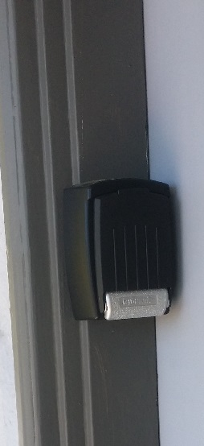
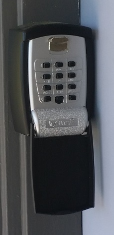
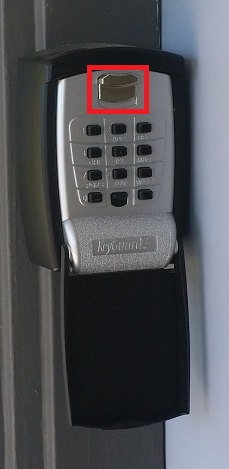
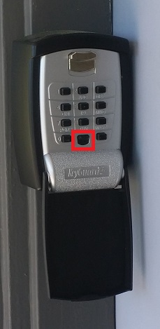

Welcome to 1209 Glen Ave.
The key is inside a lock box mounted on the left of the front door:

Pull down on the top of the front cover to open:

Enter the code you received via e-mail, and then unlatch the face by depressing the highlighted unlatch button:

If you enter an incorrect code, you must hit the reset button before trying again:

To close the box, you must again enter the code and depress the unlatch button before the face can be pushed back into the closed position: